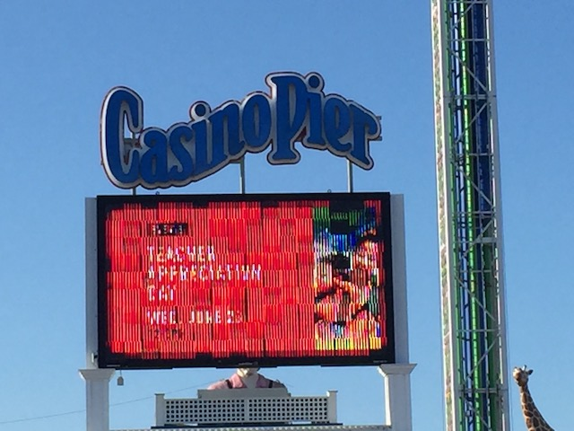
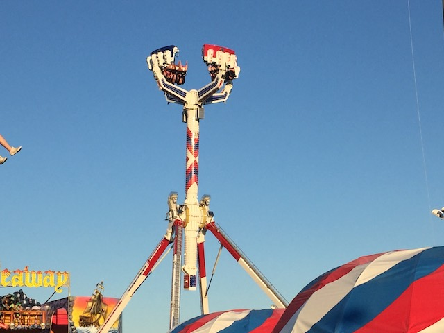
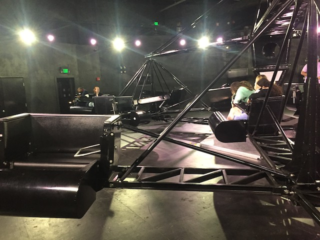

| |
Casino Pier Review

Casino Pier is a boardwalk park that.....is far from the best of its type. It's just a small little park on the beach. But you know what? This small little park is just a ton of fun. I had a total blast here. First off, Hydrus is just a really fun coaster. Sure, it's not the best ride ever by any means, but it's just a really fun addition. And for a small little park like this, it is a PERFECT addition. But on top of that, the park is just a lot of fun. Perhaps I just hit it on a really good day and didn't have to deal with crowds, bad people, and other potential issues. But I just had a total blast here. I was able to really take the entire park in. Sure, none of the other rides really stand out. Well, I guess Pirate's Hideaway does. But not in an amzing way. More so in a WTF kind of way. The entire park just has a really nice seaside park atmosphere. Some fun coasters, classic flat rides, all with the atmosphere and aroma of a day at the beach. Yeah. It's true that this is far from the best park ever. But if you find yourself on the Jersey Shore, this is definately a park worth hitting up.
Rollercoasters
There is a link to a review of all the Rollercoasters at Casino Pier.
Top Coasters
Hydrus Review

WTF Coasters
Pirate's Hideaway Review

Flat Rides
Here are the reviews of all the Flat Rides at Casino Pier. First off, this crazy ride called Super Storm. It looks like something straight out of a carnival. It's very dizzying, and....just a really fun ride. I'm always a huge fan of nauseating rides that spin you upsidedown. THOSE are my kinds of rides. So yeah. HIGHLY recommended if you're at Casino Pier. It's honestly the 2nd best ride at the park! Next up, their Double Shot. Shore Shot. This is pretty much just a standard S&S Double Shot. Nothing too crazy, but I do enjoy the Double Shots. Two times shooting up, twice the airtime. And yeah. The beachside setting really helps. Get a nice view of the Atlantic Ocean while on the ride. Definately worth a ride if you're riding and have a wristband. Next up would be Centrifuge. This is the parks scrambler. And....wait what? The scrambler is important enough to get talked about? Yeah. This is actually a really fun scrambler. It REALLY reminds me of the indoor scrambler at Funtown Splashtown USA. The lights and music just make it SO MUCH BETTER!!! They also have a Moby Dick ride, which....I do enjoy these types of rides. Good for some laterals. And those are the flat rides I rode. Casino Pier also has a Disk-O, a breakdance, a Tilt a Whirl, a Music Express, some chairswings, a ferris wheel, bumper cars, and a carousel.

Spinning upsidedown? This is my type of ride.

These rides are so much more fun indoors with music and a trippy light package.
Water Rides
Casino Pier doesn't have any water rides.
Water Park
Yep. Casino Pier does in fact have a water park. I didn't even notice it in all honesty. I technically can't judge since I never visited it, but I honestly can't say I'm missing too much. Maybe someday I'll check it out. But most likely not since.....no slide there really stands out to me.
Dining
Yeah. Casino Pier has nothing special to talk about in this department. As a small park, it pretty much just serves the typical greasy food that amusement parks are known for. Burgers, Hot Dogs, Pizza, etc. The one thing that stood out to me was....things dipped in chocolate. Like....Chocolate Covered Doritos. Yeah. WTF? But hey. The one thing I got was a Gyro. Not the highest quality, but it was good nonetheless.
 Hmm. Gyros. By theme park food standards, this is kind of unique. OK. Not really, but still good.
Hmm. Gyros. By theme park food standards, this is kind of unique. OK. Not really, but still good.
Theming and Other Attractions
Here are the reviews of all the other stuff at Casino Pier. As far as theming goes, Casino Pier doesn't have JACK SH*T!!! Sure, it has a really nice seaside atmosphere by the beach. So it has that going for it. But as far as sheer theming goes, you have a couple tacky statues at best. This is PURELY an AMUSEMENT PARK!!! NOT A THEME PARK!!! You won't find any special theming here. But as far as other things to do, Casino Pier has quite a nice selection of stuff to do. First up, Go Karts. Casino Pier has a ton of Go Karts. None of them seemed special, but Jason is a huge fan of Go-Karts. So that's something that'll make him very happy. They also have a couple things of Mini Golf, as well as several arcade games and Midway Games. None of this stuff really stands out. But they're all fun things to do that are pretty standard at a Seaside Park. Also, there's the beach. So if you want to play in the Atlantic Ocean, you can.
In Conclusion
Casino Pier is a fun little park right by the seaside. It's far from the best park ever. But when compared to other parks on the Jersey Shore, it's for sure one of the better ones. They actually have a major coaster here in Hydrus. Sure, it may not be unique at all, but it's still a really fun ride and perfect for a park like this. It also just has a fun atmosphere for a good afternoon. If you're on the Jersey Shore, and wanna ride some roller coasters, then definetly check out Casino Pier. Hydrus genuinely is a really fun ride, and Casino Pier is just a really nice little park to have a lot of fun at.
Enthusiast FAQs.
*Are there kiddy coaster restrictions? - I don't think so. Both Kiddy Coasters were closed when I visited Casino Pier. I haven't heard of any restrictions on their kiddy coasters. But I can't verify anything.

Tips
*Don't treat Casino Pier like a credit whore stop. It's genuinely a fun park.
*Get an unlimited ride wristband.
*Have Fun!!!!
Location
Seaside Heights, New Jersey, U.S.A
Theme Park Category:
Small Park
Last Day Visited
June 17, 2021
I haven't made a Casino Pier video. Hopefully I can get one done sometime.
Complete Update List
2021
East Coast Trip 2021
Here's a link to the parks website.
Home
|